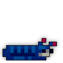
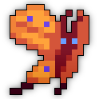
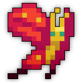
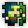
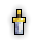
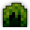
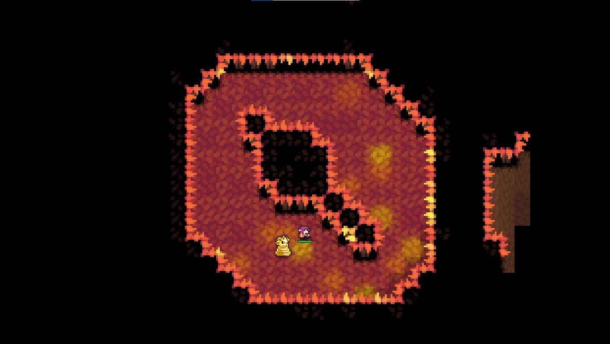

| Last updated: Exalt Version 5.13.0.0 (June 2025) |
|---|
 |
| Dust Drops | ||
|---|---|---|
| 37-44 |
41-47 |
0 |
The Woodland Labyrinth is a high-level dungeon that is a much more difficult version of the Forest Maze.
This dungeon is a source for both Greater Potions of Vitality, Greater Potions of Attack and Potions of Life. It is also the source of the untiered Leaf Bow, the Wakizashi of Eastern Winds, Labyrinth Dweller’s Sheath, and Elder Heartwood Staff.
The portal to the Woodland Labyrinth has a chance to drop from the Man-Eating Flytrap, Great Owl, Hornet’s Nest, and Bloodroot Treant, and has a guaranteed chance to drop from Possessed Pumpkin.
This dungeon must be completed to earn ‘Explosive Journey‘, ‘Epic Battles‘, ‘Hero of the Nexus’ and ‘Realm of the Mad God’ fame bonuses.
| The Realm Eye says: |
|---|

The ecosystem of the Woodland Labyrinth is remarkably similar to that of the Forest Maze despite being located in the upper highlands. Notably, the increased elevation initiates a chemical reaction in some of the vegetation, causing it to violently eject plant matter with the force of a bullet. The labyrinth was once rather tame, but the introduction of the Megamoth species made the jungle much more feared among explorers. |
 The Woodland Labyrinth Key is available in the Nexus for 100
The Woodland Labyrinth Key is available in the Nexus for 100  .
.
See the Woodland Labyrinth Guide for a complete walkthrough on the dungeon and all its enemies.
The dungeon consists of a series of rooms in a dense forest. Each room is a randomly chosen premade setpiece, but the layout is procedurally generated. Rooms have grassy floor tiles with occasionally exposed dirt and a dense network of trees serving as the “walls.” Players can move between rooms in dark pathways between the trees. These pathways are not visible on the minimap but can be seen as an opening within the trees if the player rotates the camera.
The enemies are stronger versions of their Forest Maze counterparts. There are also invincible plant turrets scattered in each room which inflict debuffs with their attacks. A treasure room is a guaranteed spawn in each instance of the dungeon. The treasure room will be found at the end of a long pathway within the trees. Only one treasure room can spawn.
| Phase | Facts |
|---|---|
|  |
|
|  |
|
|  |
|
| Item | Drops From |
|---|---|
 |
Murderous Megamoth |
 |
Various Enemies, |
 |
Murderous Megamoth |
  |
Murderous Megamoth, |
 |
Murderous Megamoth |
   |
Murderous Megamoth, |
 |
|
|  | Murderous Megamoth, |
|  | Woodland Skysplitter Stone |
The Woodland Labyrinth is part of the Mighty Quest pool from The Tinkerer and has four associated quests.
| Name | Description | Items Needed | Reward |
|---|---|---|---|
| The Megamoth | Defeat the Murderous Megamoth in the Woodland Labyrinth. | |
 |
| Epic Showdown | Slay Jon Bilgewater, the Son of Arachna, and the Murderous Megamoth to be rewarded. |   |
|
| Exterminate! | Get rid of those overgrown insects! |  |
|
| Arboreal Adventurer | Eradicate the Heart of the Wetlands, the Fountain Spirit and the Murderous Megamoth! |   |
|
Note: More specific detail about the phases can be found via the respective boss pages.
Before you enter the room, it is advisable to make sure that nothing is going to follow you in with the boss, because enemies in this dungeon can be very dangerous when you are too focused on the boss.
When you enter the room, the boss will be in its larvae stage, the Megamoth Larva where he fires high damage projectiles in all directions. As long as you don’t hug him, it isn’t too hard to survive. Also ensure you don’t sit on the Mini Larvae. After sufficient damage is done, it spawns puke tiles in the centre of the room, becomes invulnerable and flashes red. It is advisable to back up at this point in time because the boss is switching to his second stage, the Mammoth Megamoth.
From this stage onwards, it is important to avoid moving around the centre of the room. As all the puke tiles are located there and also inflict Sick, traversing that area will increase the difficulty of survival. The boss also inhibits two special attacks (both shotguns) that initiate directly at the centre of the room, instantly giving you a free character slot. Always move around the outer edges of the room.
Be wary of all the Micro Megamoth Sentinels that shoot bullets inflicting Confuse. Getting hit by a single confusion bullet can send you spiralling into the boss for an instant death.
As he switches, the boss travels to a corner of the room or circles around its edges. When the boss is stationary and firing converging bolts, strafing will minimise the damage taken from the boss. When the boss circles, simply rotate along with it. At approximately ½ HP, the boss will travel directly to the centre of the room, unleashing a barrage of shots that alternate between covering the diagonal and cardinal directions. These cover the entire room, so ensure you strafe along the edges of these barrages to minimise the damage taken.
After enough damage is dealt, sadly the boss becomes invulnerable one last time to switch to the final stage, the Murderous Megamoth.
At this stage, all existing Micro Megamoth Sentinels evolves intoMicro Megamoth Guardians after some time. These variants inflict Slow. Since the boss lunges towards players, it is suggested to never stop moving and to avoid moving directly towards it. When the boss is shooting yellow spinners perpendicularly, rotate along with it whilst weaving around the decelerating bullets. When the boss activates its special attack, it starts rotating around the room whilst leaving lingering leaf projectiles. Do not stand or move on the exact same path that it is traversing, as it will pop your character. If it passes you, it is unwise to try to catch up with it from behind, as you run the risk of running on top of the boss and also the possibility of it changing to the lunging attack pattern, instantly popping you.
This dungeon was added in Release 16.0.0 (Aug 2013) alongside Deadwater Docks and The Crawling Depths, comprising the first three “Epic Dungeons”. The original name for this dungeon was: ‘Epic Forest Maze’. See the original Woodland Labyrinth here.
With the Patch X.20.0 (Dec 2017), the loot from the dungeon was improved substantially. This dungeon used to be highly unpopular among players due to the limited loot it awarded, considering its difficulty and rarity.
Before Patch X.32.4.1 (Jan 2020), the sprite originally looked like this:
")
In Exalt Version 1.3.0.0 (Dec 2020), this dungeon along with the Toxic Sewers and The Crawling Depths received complete reworks, changing almost all content within the dungeon.
Before Exalt Version 1.3.0.0 (Dec 2020), the sprite looked like this:

Before Exalt Version 5.11.0.0 (May 2025), dungeon completion gave 45-104  with 60% chance and 13-31
with 60% chance and 13-31  with 50% chance.
with 50% chance.
Before Exalt Version 5.12.0.0 (June 2025), dungeon completion gave 34-40  and 32-38
and 32-38  .
.
There is a room type whose shape closely resembles the Honey Scepter, an easter egg used by former DECA developer Toastrz as he was the lead developer for the Woodland Labyrinth.



{kind=link}